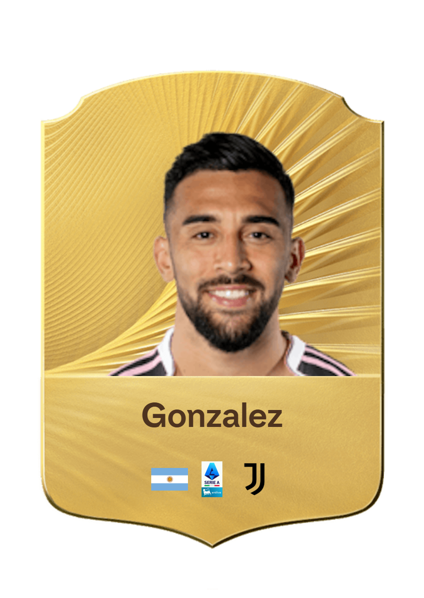
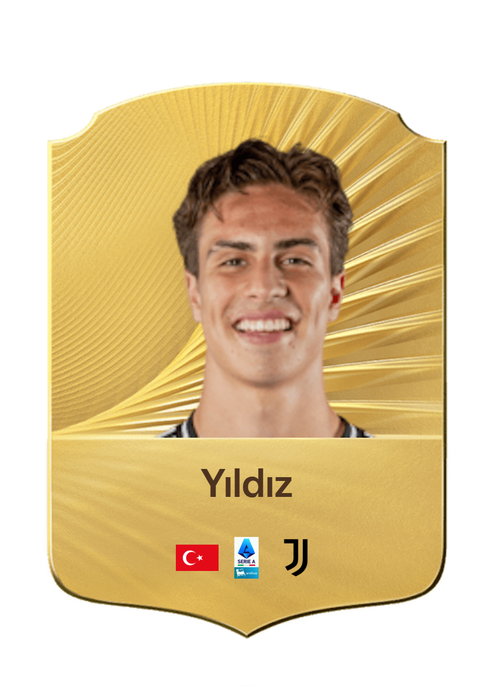
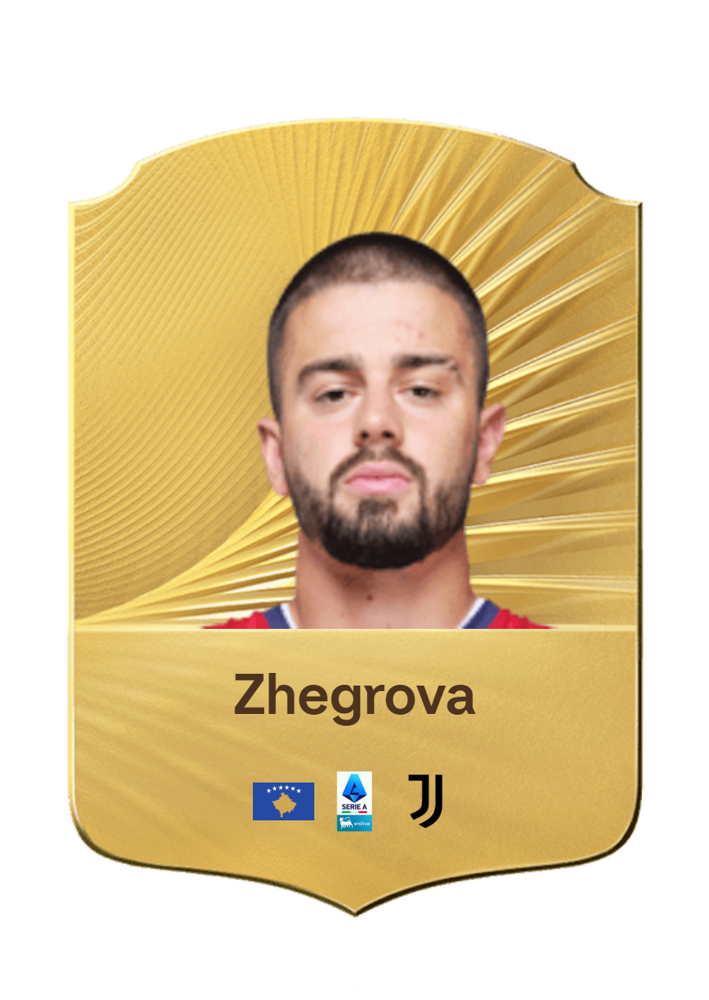
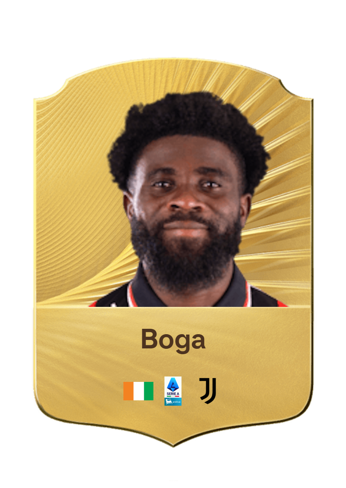
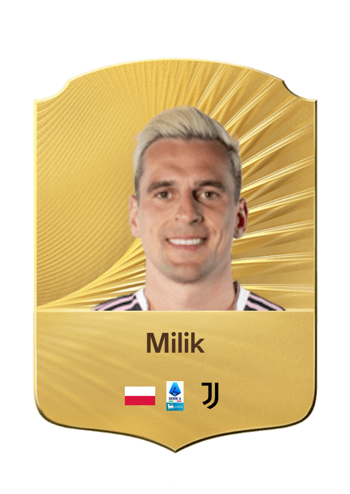
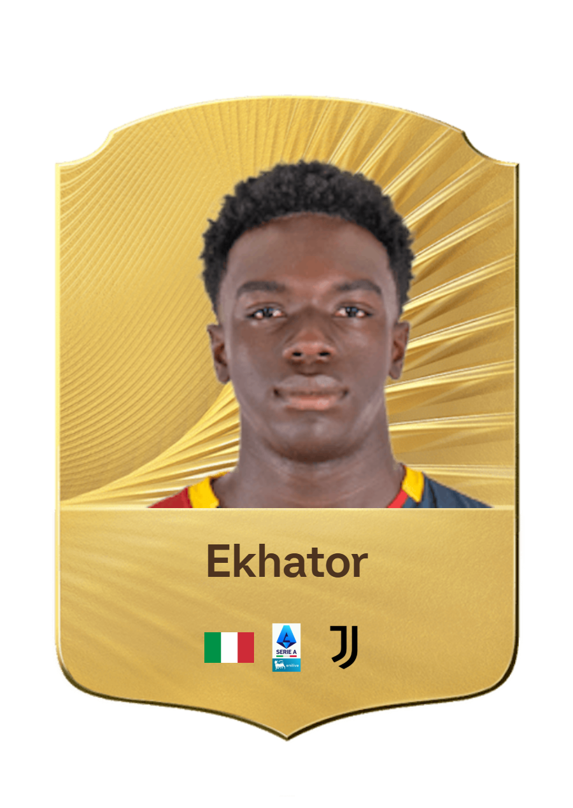
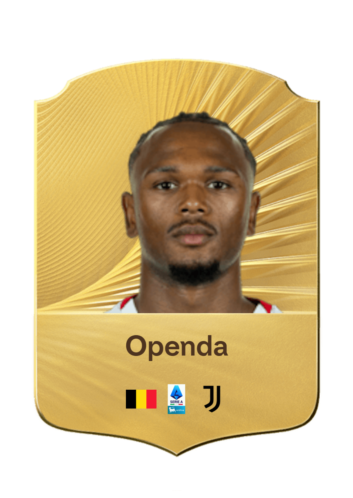
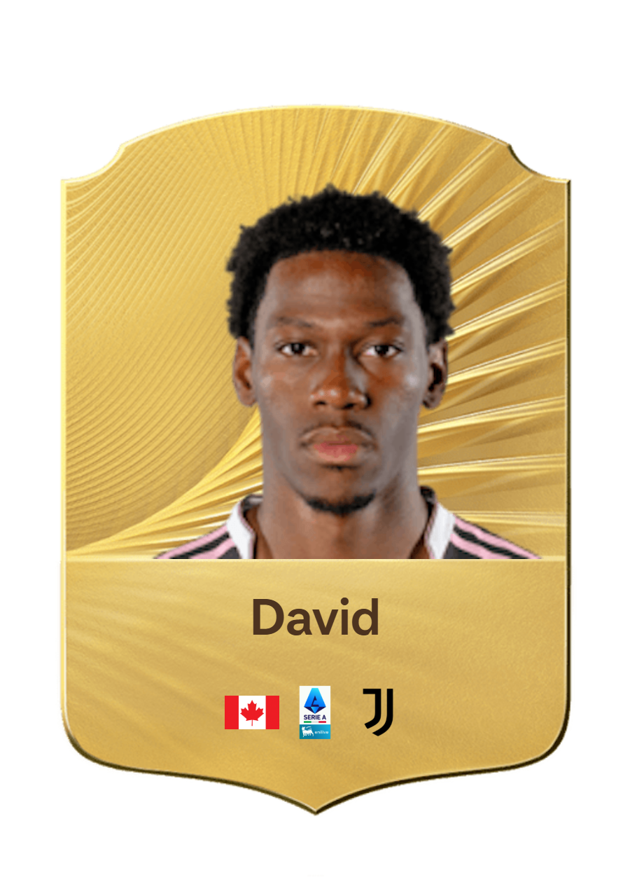

Gli attaccanti della Juventus FC sono le punte di diamante della squadra e i principali protagonisti delle azioni da gol. Veloci, tecnici e dotati di grande istinto, sanno sfruttare ogni spazio per creare occasioni e fare la differenza nei momenti decisivi. Il loro fiuto per il gol e la capacità di mettere in difficoltà le difese avversarie regalano emozioni ai tifosi bianconeri a ogni azione offensiva.
Arrivato alla Juventus nel 2024, Nicolás González è un esterno offensivo argentino che indossa la maglia numero 11. Si distingue per la sua velocità, la sua tecnica e la capacità di creare occasioni in attacco.

Arrivato alla Juventus nel 2024, Francisco Conceição è un esterno offensivo portoghese che indossa la maglia numero 7. Si distingue per la sua velocità, il suo dribbling e la capacità di creare pericoli nell'uno contro uno.
Arrivato alla Juventus nel 2022, Kenan Yıldız è un attaccante / trequartista turco che indossa la maglia numero 10. Si distingue per la sua tecnica, il suo dribbling e la sua creatività nelle zone offensive.

Arrivato alla Juventus nel 2025, Edon Zhegrova è un esterno destro kosovaro che indossa la maglia numero 11. Si distingue per il suo dribbling, la sua velocità e la sua creatività nelle azioni offensive.

Arrivato alla Juventus nel 2026, Jérémie Boga è un esterno offensivo ivoriano che indossa la maglia numero 13. Si distingue per il suo dribbling, la sua velocità e la capacità di creare occasioni offensive.

Arrivato alla Juventus nel 2022, Arkadiusz Milik è un attaccante polacco che indossa la maglia numero 14. Si distingue per il suo senso del gol, la sua tecnica e la sua qualità nelle conclusioni.

Arrivato alla Juventus nel 2026, Jeff Ekhator è un attaccante italiano che indossa la maglia numero 18. Si distingue per la sua fisicità, la sua velocità e il suo senso del gol.

Arrivato alla Juventus nel 2025, Loïs Openda è un attaccante belga che indossa la maglia numero 20. Si distingue per la sua velocità, la sua profondità e la sua grande capacità realizzativa.

Arrivato alla Juventus nel 2025, Jonathan David è un attaccante canadese che indossa la maglia numero 30. Si distingue per la sua velocità, il suo senso del gol e la sua freddezza nelle conclusioni.
